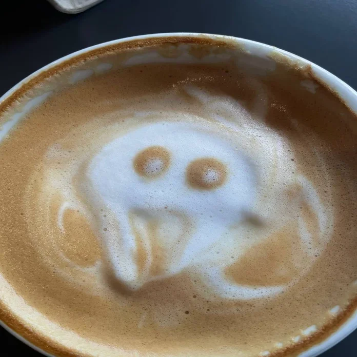

Это было самое начало пути. На этом этапе важно было проникнуться
основами и настроиться на учёбу. И, возможно, подумать, как новые
знания могут повлиять на ваше будущее.
Место для ваших воспоминаний о начале обучения.
1 спринт: Я — чистый лист
</HTML>
На первых этапах мы работали со страхами и сомнениями, которые
часто испытывают новички. Один из них — страх перед чистым листом.
Это, конечно же, намного сложнее, чем боязнь куска бумаги. Часто
за этим ощущением скрываются более глубокие вопросы: с чего
начать? а вдруг будет слишком сложно? что, если я не справлюсь?
Опасное это дело, Фродо, выходить за порог: стоит ступить на
дорогу и, если дашь волю ногам, неизвестно куда тебя занесет
- Бильбо Бэггинс
1 спринт: А если не получится?
<css>

Первый проект — позади! Но это всё ещё самое начало пути. Радость
могла быстро померкнуть и смениться ожиданием провала. Или вы,
наоборот, могли вдохновиться успехами и поверить в себя.
Если вы хотите взяться за создание чего-то нового и
грандиозного, вам не нужны для этого миллионы долларов.
Достаточно пиццы и диетической колы в холодильнике, дешевого
компьютера для работы и преданности делу, чтобы со всем
справиться
- Повелители DOOM
2 спринт: Погоня за идеалом
<desigions>
На этом этапе вы уже достаточно разбирались в основах вёрстки,
чтобы понять, как много ещё впереди. Вы могли попытаться погнаться
за идеалом и понять, что он недостижим. А, может, вы вовсе и не
подвержены перфекционизму и вместо того, чтобы сделать идеально,
старались просто сделать.
...И они приняли рабочую гипотезу, что счастье в непрерывном
познании неизвестного и смысл жизни в том же
- Понедельник начинается в субботу
2 спринт: О тех, кто рядом
care
Всё это время вы были не одиноки (хотя, возможно, иногда и
чувствовали, что одни против целого мира). Вас окружали
одногруппники, команда сопровождения и просто близкие люди,
которым можно пожаловаться, если очередной макет просто так не
поддавался. Осваивать что-то новое легче, когда рядом есть
единомышленники, не правда ли?
Место для ваших воспоминаний о начале обучения.
3 спринт: Обходные стратегии
<support>
На этом курсе вы постоянно решали разные задачи. В какой-то момент
вам могло показаться, что решения просто иссякли. Значит, пришло
время посмотреть на задачу под другим углом.
Место для ваших воспоминаний о начале обучения.
3 спринт: Когда опускаются руки
<lifes-style: none;>
Во время учёбы часто возникает чувство, когда не знаешь, за что
хвататься. Вроде и проектную пора сдавать, и задачи хочется
порешать, и в теории получше разобраться, и жизнь не забыть
пожить. В такие моменты очень нужна концентрация. Вспомните,
откуда вы её черпали.
Место для ваших воспоминаний о начале обучения.
«Сейчас я здесь»
<experience>
Сейчас вы уже очень много знаете о вёрстке. Но это только начало.
Во-первых, впереди ещё много материала про «красотищу». Во-вторых,
с окончанием курса учёба не заканчивается. Вёрстка — это целый
мир. И этот мир постоянно меняется. Познать его полностью не
получится, но это тот случай, когда важен сам процесс познания.
Ведь часто путь — и есть результат.